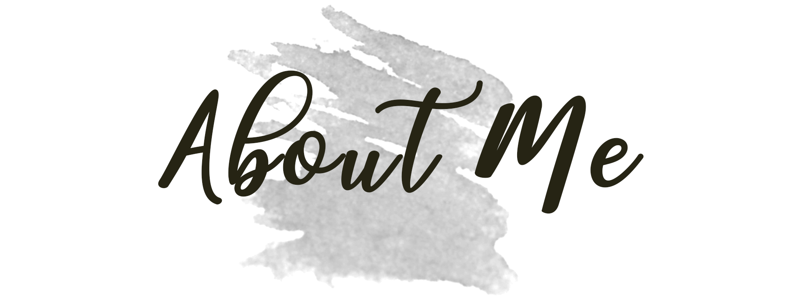
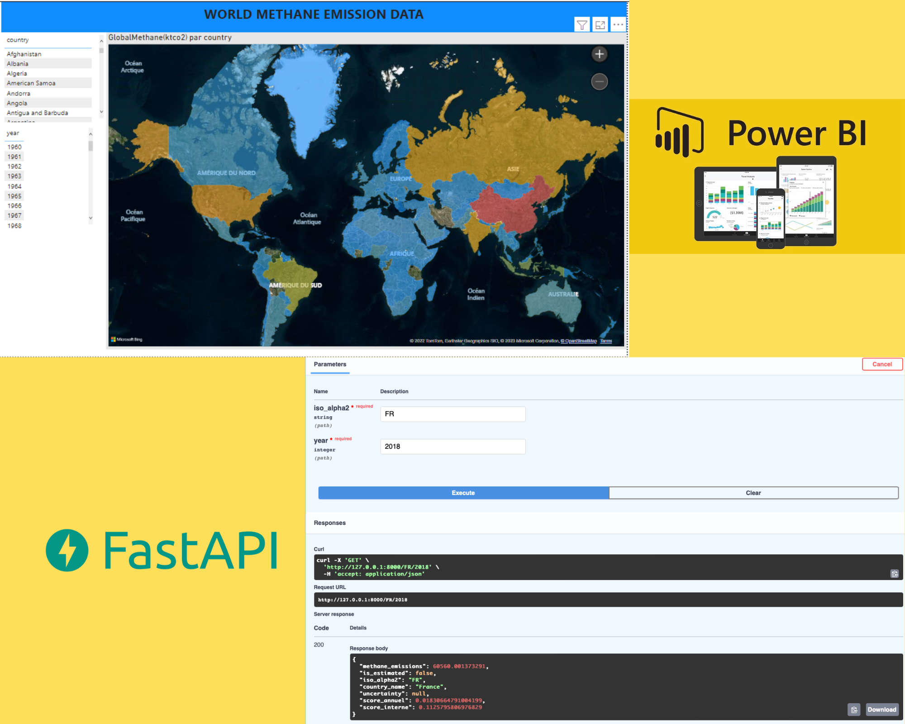
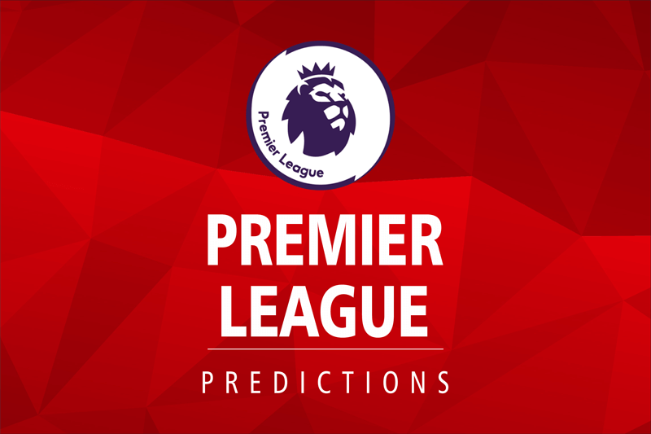

About Me

Education : I am a recent graduate from Ecole Centrale with a Data Science and Digitalization Option (S2D) - Management Track and I have two years of experience. My background in mathematics and my strong analytical mindset have prepared me well for a career in data science.
Research Interests : I’m currently learning Data science that includes Machine learning and Deep learning. I’m looking to collaborate on data science projects
Publications: All of my projects are available on my github account
Projects

2023-04-10
Project I : Building a data pipeline based on the Methane emissions data from the WorldBank API.

In this project, I build a data pipeline using python. the project consists in creating a RestAPI (FastAPI) with a specific endpoint that will be able to return the Methane emissions for a country at a specific year.
The project includes the following steps:
- Data retrieval: Using a Python script to retrieve methane emission data from the World Bank API using the WBGAPI module.
- Data estimation: Using various methods such as rolling statistical, KNNImputer, and linear interpolation to estimate missing methane emission data.
- Uncertainty computation: Using the bootstrapping method to calculate the uncertainty of the estimated values.
- Scoring methodology: Evaluating countries based on their methane emissions using various methods such as total emissions, emissions per area, emissions per capita, and emission intensity.
- Data visualization: Creating interactive visualizations using the power BI to present the results.
- REST API (FastAPI) to return the Methane emissions for a country at a specific year.
Here is the link to the code
Project II : Premier league predictions

In this project, we build a machine learning model to predict the score of Premier League matches. For this we have data from the last 3 seasons.
The project includes the following steps :
- Data retrieval: Using a Python script to scrape premier league matches data from this website here
- Preprocessing: Using right data types to optimize the memory used of the data and performing cleaning data.
- Modelisation: Using machine learning model especially RandomForestClassifier. We trained the model first and predict the result of future matches.
- First Evaluation: Compute the precision score of the prediction of the model.
- Improving the precision: Creating new features by performing rolling average.
- Last evaluation: Compute again the precision score of the prediction of the model improved.
Here is the link to the code
Contact
Email: aboubacar198@gmail.com
Address: Casablanca-Morocco